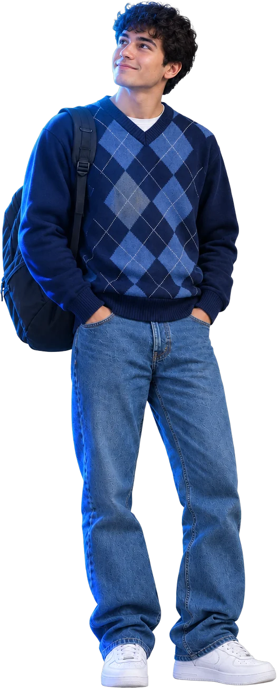

Money and work
Lack of resources, the need to work, and the cost of transport, materials and housing.
Needs institutional supportPharis supports students while they study and alerts professors and administrators when someone starts falling behind, weeks before grades show it.
Diego Ramírez

Schedule 10 minutes with this student this week.
The problem
In the region, dropping out is not the exception: it is the norm, and it starts in the first year.
Latin America and the Caribbean, graduation by age 25-29. Source: Ferreyra, Avitabile, Botero, Haimovich & Urzúa, At a Crossroads, World Bank, 2017.
Graduation rate
Source: World Bank, 2017.
In Mexico
3 in 10
students who start a bachelor's degree drop out during the first year, at public and private universities alike. The window to act is short.
Source: SEP (Mexico's Ministry of Education), General Directorate of University and Intercultural Higher Education, May 2026.
The causes identified by the SEP rarely come alone.
Lack of resources, the need to work, and the cost of transport, materials and housing.
Needs institutional supportGaps from earlier schooling that pile up course after course.
Leaves signs in how they studyStress, anxiety and mental health struggles that change how and how much they study.
Leaves signs in how they studyTrouble adjusting to university life, or doubts about the chosen degree.
Leaves signs in how they studyCauses cited by the SEP at the Universia Rectors' Meeting, May 2026.
Almost none of these causes shows up on a report card until it is too late.
The blind spot
Your LMS records what gets turned in. Not what it takes to get there.
Illustrative case: Diego Ramírez over 16 weeks. His LMS records every assignment on time until week 13 and shows the first zero in week 14. The study signal Pharis sees starts dropping in week 5, and in week 6 Pharis alerts the professor. That is eight weeks to step in before the LMS shows the problem.
8 weeks
between Pharis's first alert and the first zero in your LMS. By the time the LMS shows the problem, it is already a zero.
How it works
Three steps. Students just study as usual; the system does the rest.
From a student with a question to a professor with an alert. This is Pharis in under two minutes.
For students
Pharis supports students with the context of their own course and leads them to understand, not to copy.
It answers with the real assignment brief, readings and calendar of their course, not with answers from the internet.
A lightweight Windows app or a Chrome extension. Students choose.
It gives hints, asks questions and checks the reasoning. It never hands over the finished assignment: it helps the student solve it.
For professors
Pharis turns each student's daily work into actionable teaching analytics, without asking you for an extra hour.
Pharis doesn't grade. It guides your judgment.
Every alert and every analysis is a starting point. The decision always belongs to the professor.
For administrators
Adoption, grading and students who are fading out, by professor and by course. No reports to request.
Which students still don't use Pharis, by professor and course.
Detections go only to leadership, never to the professor. A person reviews them and decides the next step.
The return
Enter your institution's numbers and compare what you lose each year with what the license costs.
$0
Retaining 10 students a year is worth $0. A campus license costs $0 a year.
Illustrative comparison: the license cost is a reference estimate and final pricing is set per institution. The retention figure uses your average tuition. The starting dropout rate (7%) is Mexico's national higher-education dropout rate for the 2023-2024 school year (SEP, Principales Cifras 2024-2025); adjust it to your institution's.
Integration
Pharis reads the context that already lives in your learning platform and turns it into help for students and signals for professors. It doesn't replace your LMS: it understands it.
Tap a data point to see what it becomes.
A tutor that knows every course, in Chrome or on Windows.
Real-time dashboard and at-risk student alerts.
Institution-wide view of every class.
Start this semester
Book a demo for your institution. We'll show you the dashboard with a real case and work out the return for your campus together. No commitment.
Rather write to us? contacto@pharis.mx